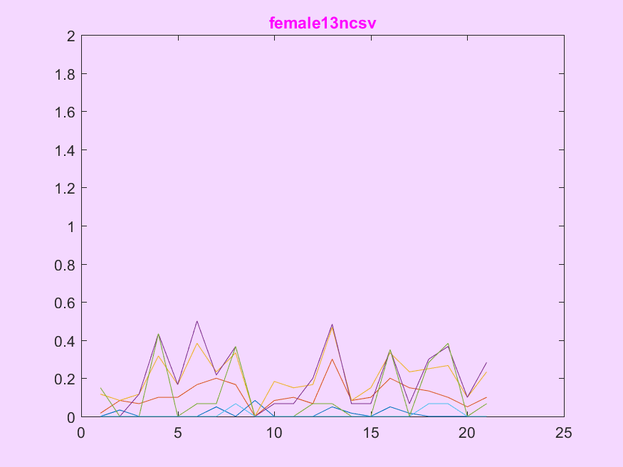
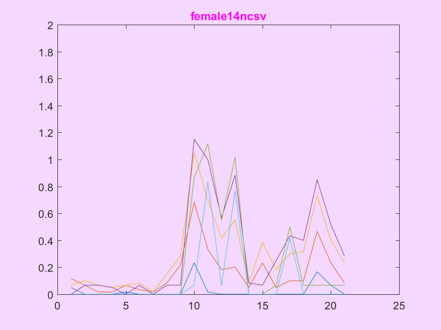
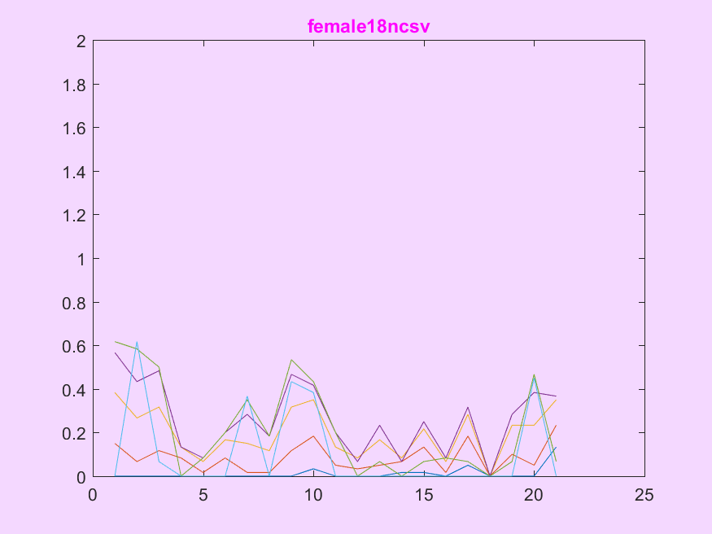
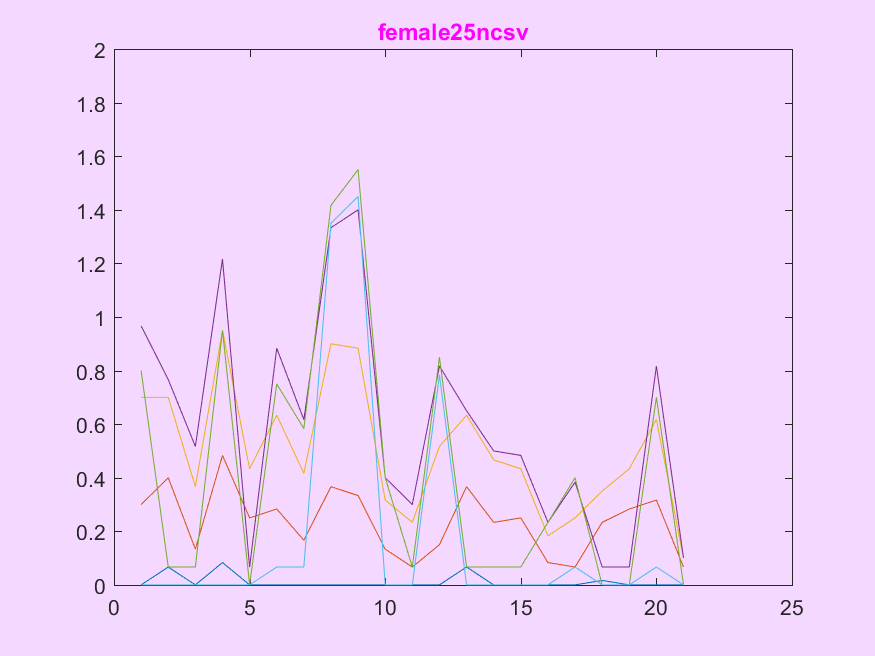
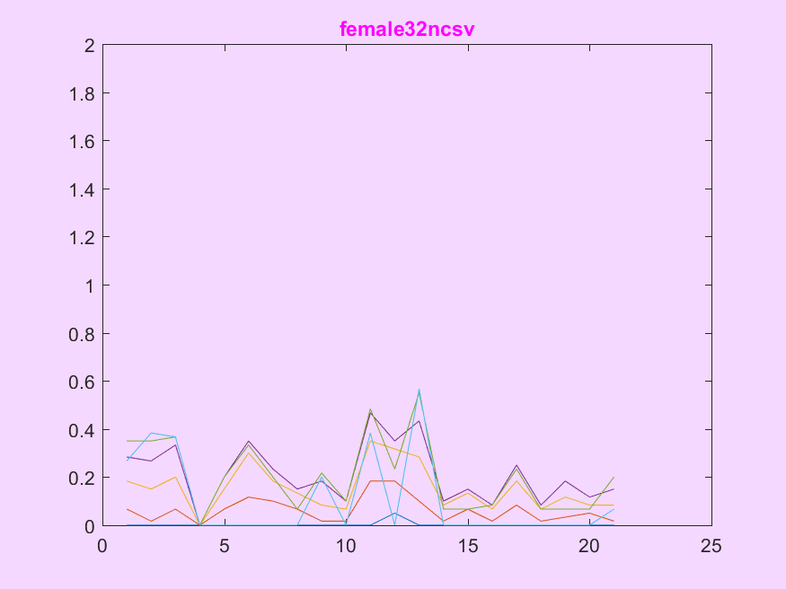
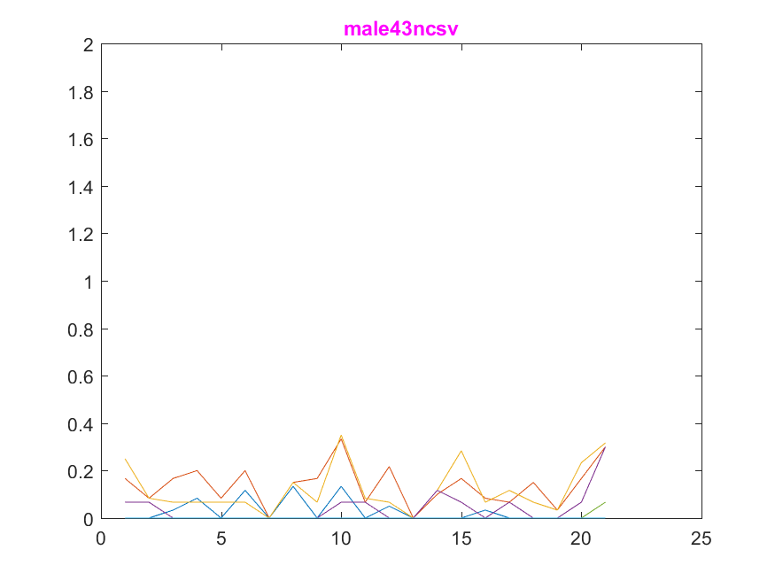

<h2 style="color: #53055d;">
Row data drow without any processing shwoing that every person has a unique way for touching the screen keyboard we are going to do more data analysis 
for gender estimation and user identification 
</h2>
















